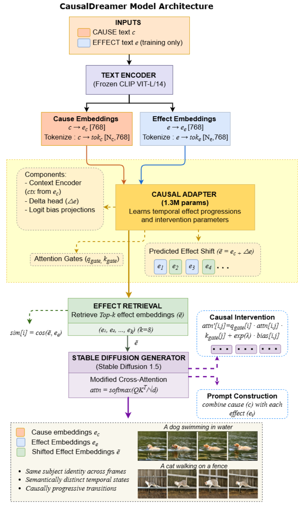

Visual Results
Result Gallery
Click any image to open fullscreen · Use arrows or keyboard to navigate


5 slides · Click any image to zoom fullscreen · Press ← → or use arrows
A diffusion-based framework for identity-preserving temporal image sequence generation with discrete semantic state progression — trained on CausalLite10K using only text-based cause–effect pairs, no paired visual data required.
Text-to-image diffusion models generate photorealistic images but are not designed to produce temporally ordered image sequences that depict how events unfold while preserving subject identity. We introduce CausalDreamer, a framework for temporal image sequence generation that models semantic state progression through causal-inspired, intervention-guided diffusion attention.
Trained on CausalLite10K, a text-only dataset of 10,000 curated cause–effect pairs, a lightweight 1.3M-parameter adapter learns effect progression patterns in CLIP embedding space. A causal-inspired intervention mechanism modulates Stable Diffusion cross-attention to enable discrete temporal state transitions while maintaining identity consistency.
Given a single cause description, CausalDreamer retrieves temporally ordered effects and generates progressive image sequences. Across 190 scenarios, CausalDreamer achieves a favorable identity–diversity balance, delivering 4.7× higher semantic diversity than strong baselines while maintaining positive temporal ordering and cause–effect alignment. Unlike video diffusion models emphasizing smooth motion, CausalDreamer focuses on ordered semantic state transitions in image sequences.
Click any image to open fullscreen · Use arrows or keyboard to navigate
5 slides · Click any image to zoom fullscreen · Press ← → or use arrows
A text-only dataset of 10,000 curated cause–effect pairs spanning 3,709 unique causes and 5,131 unique effects — enabling scalable temporal learning without any paired visual supervision.
A 1.3M-parameter adapter learns temporal effect progressions in CLIP space and modulates SD cross-attention via do-calculus-inspired gating and logit biases — backbone-agnostic and adds only ~2.3 ms per frame.
Only method with positive CCS (0.311) and CPS (0.040) causal ordering scores — all baselines are near-zero or negative. Best IDS of 0.154 with 4.7× higher semantic diversity than ControlNet.
CausalDreamer integrates a frozen CLIP ViT-L/14 text encoder, a lightweight causal adapter, effect retrieval, and intervention-guided cross-attention within Stable Diffusion 1.5. Given a single cause description, the model predicts a semantic shift in CLIP space, retrieves the 8 most similar temporally ordered effects from a vocabulary of 5,131 outcomes, and generates identity-consistent frames using causal intervention.
Context encoder (2-layer MLP, dim 1024, LayerNorm, GELU) processes the cause embedding. Delta head predicts semantic displacement Δe. Shifted embedding ẽ = ec + Δe represents the expected temporal state in CLIP space. Trained with cosine alignment loss: ℒ = 1 − (ẽ · ee) / (‖ẽ‖‖ee‖).
Q/K gates centered at 1 enable both amplification and suppression: qgate = 1 + tanh(Q-Gate(ctx)), kgate = 1 + tanh(K-Gate(ctx)). Two learnable projection matrices U, V produce additive logit biases biasij = U-Proj(ẽ)i · V-Proj(Tc)j / √Dh for targeted attention-space intervention.
Retrieves top-8 effects from the 5,131-entry vocabulary via cosine similarity: effects = TopK({cos(ẽ, ei)}, k=8). Temporal ordering emerges from semantic proximity along the learned causal direction in CLIP space.
Modified cross-attention in all SD layers: attn′ij = qgate,i · attnij · kgate,j + exp(λ) · biasij, λ = 0.7. Each frame generated independently via DDIM (50 steps, CFG 7.5) — eliminating drift from sequential editing pipelines.

Full pipeline: cause text → frozen CLIP ViT-L/14 → causal adapter (predicts Δe, gates, biases) → top-8 effect retrieval → prompt construction ("Consistent scene: {c}. Therefore, {e}.") → SD 1.5 with intervention-guided cross-attention → temporally ordered identity-preserving frames.
Cosine alignment loss (training objective):
ℒ = 1 − (ẽ · e_e) / (‖ẽ‖ · ‖e_e‖)Attention gate modulation:
q_gate = 1 + tanh(Q-Gate(ctx))Intervention-modified cross-attention:
attn′_ij = q_gate,i · attn_ij · k_gate,j + exp(λ) · bias_ijEffect retrieval:
effects = TopK( {cos(ẽ, e_i)}^5131_i=1, k=8 )AdamW · lr = 1×10⁻⁴ · batch size = 32 · 200 epochs · ~4 hrs on NVIDIA A100. CLIP ViT-L/14 and SD 1.5 backbone remain fully frozen — only the 1.3M adapter parameters are updated.
190 temporal scenarios · 8 frames per sequence · averaged over 3 random seeds · all baselines use identical text prompt inputs.
| Model | CLIP ↑ | CCS ↑ | CPS ↑ | ETC ↑ | SDS ↑ | TCS ↓ | DINO-TCS ↑ | IDS* ↑ |
|---|---|---|---|---|---|---|---|---|
| Stable Diffusion | 0.292±0.019 | -0.004±0.026 | 0.000±0.000 | 0.829±0.171 | 0.195±0.063 | 0.808±0.065 | 0.474±0.160 | 0.092 |
| InstructPix2Pix | 0.263±0.040 | -0.035±0.048 | 0.000±0.000 | 0.570±0.072 | 0.126±0.069 | 0.928±0.049 | 0.846±0.104 | 0.107 |
| SDXL | 0.262±0.029 | -0.015±0.026 | 0.000±0.000 | 0.519±0.053 | 0.096±0.041 | 0.927±0.031 | 0.820±0.077 | 0.079 |
| ControlNet | 0.285±0.023 | -0.001±0.014 | 0.000±0.000 | 0.503±0.018 | 0.052±0.026 | 0.962±0.019 | 0.919±0.045 | 0.048 |
| AnimateDiff | 0.285±0.023 | -0.002±0.019 | 0.000±0.000 | 0.550±0.105 | 0.085±0.046 | 0.921±0.044 | 0.792±0.134 | 0.067 |
| CausalDreamer (Ours) | 0.303±0.035 | 0.311±0.029 | 0.040±0.072 | 0.767±0.154 | 0.246±0.127 | 0.757±0.128 | 0.625±0.198 | 0.154 |
Bold = best. *IDS (Identity–Diversity Score) = SDS × DINO-TCS — higher is better. SDS: Semantic Diversity Score (CLIP-based, frame pair variation). CCS: Cause–effect Consistency Score (progression from initial cause to final effect). CPS: Causal Progression Score (per-frame cause–effect alignment). ETC: Effective Temporal Coherence (frame-to-frame CLIP similarity). TCS: Template Consistency Score (lower = more diverse). DINO-TCS: global identity measured with DINOv2 — fully independent of CLIP training and retrieval.
Key finding: CausalDreamer is the only diffusion-based method achieving positive CCS (0.311) and CPS (0.040). All baselines exhibit near-zero or negative CCS values (−0.035 to −0.001). A random-permutation sanity check produces near-zero scores, confirming that CCS and CPS capture temporal ordering rather than per-frame quality.
ControlNet attains the highest identity (DINO-TCS: 0.919) but suppresses semantic variation (SDS: 0.052) — yielding near-static frames and the lowest IDS (0.048). Stable Diffusion increases variation (SDS: 0.195) at the cost of identity (DINO-TCS: 0.474). AnimateDiff is intermediate but achieves limited semantic progression (SDS: 0.085).
CausalDreamer achieves a balanced operating point — moderate identity (DINO-TCS: 0.625) combined with the highest semantic variation (SDS: 0.246), yielding the best IDS (0.154). This indicates controlled semantic state transitions while maintaining subject identity, rather than optimising either dimension in isolation.
SD 1.5 isolates the contribution of the lightweight 1.3M-parameter intervention adapter under controlled evaluation. The intervention mechanism is backbone-agnostic — testing on FLUX shows improved photorealism but confirms that structured semantic progression remains uncontrolled without intervention (see Gallery slide 5).
Video baselines (AnimateDiff) achieve SDS 0.085 vs. our 0.246. Standard video metrics (FVD/IS) prioritise smoothness and realism but do not capture semantic ordering — which is central to our task. The primary contribution lies in the semantic transition mechanism, not backbone scale.
Each component is individually removed to measure its contribution to the full model. All variants share the same training protocol and evaluation set.
| Variant | DINO-TCS ↑ | SDS ↑ | CCS ↑ | CPS ↑ | FID ↓ | CLIP ↑ |
|---|---|---|---|---|---|---|
| Full Model | 0.625 | 0.246 | 0.311 | 0.040 | 24.3 | 0.303 |
| w/o Retrieval | 0.571 | 0.198 | 0.265 | 0.012 | 28.7 | 0.271 |
| w/o Gates | 0.598 | 0.223 | 0.289 | 0.025 | 26.1 | 0.279 |
| w/o Bias | 0.609 | 0.231 | 0.298 | 0.031 | 25.4 | 0.283 |
| w/o Delta | 0.587 | 0.211 | 0.273 | 0.018 | 27.5 | 0.275 |
| No Intervention | 0.603 | 0.219 | 0.041 | 0.006 | 27.9 | 0.276 |
Bold = best. Each row removes one component from the full model, keeping all else equal.
DINO-TCS 0.625→0.571, SDS 0.246→0.198, FID 24.3→28.7. Without temporally ordered effects, the model cannot recover grounded semantic anchors for state transitions — the single largest contributor to overall performance.
DINO-TCS drops to 0.598, CCS to 0.289. The model loses fine-grained control over which features to preserve vs. evolve across frames. Gates enable both amplification and suppression of attention flows — critical for balancing identity with state change.
SDS drops to 0.211. Without the delta head, the model cannot learn directed semantic transitions in CLIP space — variation becomes unstructured rather than causally ordered.
CCS 0.311→0.041, CPS 0.040→0.006. Causal ordering of generated states is almost entirely attributed to the intervention-guided cross-attention — prompt construction alone cannot enforce temporal ordering without the attention mechanism.
Addressing R2 & R3: the intervention mechanism is backbone-agnostic. This comparison demonstrates the contribution is the semantic transition control, not backbone scale.
Identical retrieved effects used for both methods: "soil piles up" → "hole becomes deeper" → "paws covered in dirt". Top (CausalDreamer / SD 1.5): consistent dog identity across all frames, monotonic hole deepening and soil displacement — intervention enforces structured semantic progression. Bottom (FLUX): improved per-frame photorealism but the dog's appearance, environment, and pose change arbitrarily across frames — no enforcement of ordered semantic transitions without the intervention mechanism. This confirms the semantic transition mechanism is the core contribution, independent of backbone scale.
Target: discrete semantic state progression, not motion-continuous video. Video models (AnimateDiff) SDS: 0.085 vs. ours 0.246. Standard video metrics (FVD/IS) prioritize realism and smoothness — not ordered semantic consistency, which is central to our task.
SD 1.5 isolates the adapter contribution. The intervention is backbone-agnostic — FLUX confirms photorealism does not imply controlled temporal progression without intervention.
Method is causal-inspired, not formal structural causal modeling. Pearl's do-calculus provides conceptual motivation for intervention-style attention modulation — not claims of causal discovery, identifiability, or counterfactual guarantees.
DINO-TCS uses DINOv2 — fully independent of CLIP-based training and retrieval. Random-permutation check yields near-zero CCS/CPS, confirming scores reflect sequence structure, not per-frame quality.
CausalLite10K is a text-only dataset of 10,000 curated cause–effect pairs for temporal reasoning and semantic progression learning. Starting from 100 seed prompts covering everyday human actions and physical interactions, Llama 3 8B generates structured cause–effect pairs annotated with relation types and confidence scores. All pairs are manually curated to remove implausible transitions, physically impossible pairs, and low-confidence model outputs.
The dataset spans 190 scenario categories — human locomotion, sports, daily activities, animal behaviors, and physical interactions. Example pairs: "a dog digging in a yard" → "hole forms", "a boy dancing in the street" → "person dances", "girl jumping on a trampoline" → "child bounces". All effects are CLIP-embedded to form a discrete causal vocabulary of 5,131 outcomes, enabling retrieval-based temporal progression without any visual data.
Namrataben Patel and Honggang Wang
Katz School of Science and Health, Yeshiva University, New York, USA.
npatel13@mail.yu.edu · honggang.wang@yu.edu
@inproceedings{patel2026causaldreamer,
title = {CausalDreamer: Temporal Image Generation
through Causal Intervention Attention
with Identity Preservation},
author = {Patel, Namrataben and Wang, Honggang},
booktitle = {Proceedings of the IEEE International
Conference on Multimedia and Expo (ICME)},
year = {2026}
}Source code, model checkpoint, and project page: